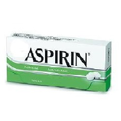

Aspirin (အကိုက္အခဲေပ်ာက္ေဆး)

Aspirin ဆိုတာ ဘာေဆးလဲ
- အက္စပရင္ဆိုတာ Salicylate နဲ႔ စတီးရိိြဳက္ေဟာ္မုန္းမပါေသာ ေရာင္ရမ္းျခင္းကို သက္သာေစသည့္ ေဆးျဖစ္ပါသည္။
- ခႏၶာကိုယ္ေရာင္ရမ္းရာတြင္ ထြက္ေပၚလာေသာ ဓာတ္ပစၥည္း ထုတ္လုပ္မႈကို တားေပးၿပီး ေရာင္ရမ္းျခင္းကို သက္သာေစႏိုင္ပါသည္။
- Aspirin ပမာဏ နည္းနည္းကို ေသြးက်ဲေဆးအေနနဲ႔လည္း ေရရွည္စြဲေသာက္လို႔ရပါတယ္။
ဘယ္ေနရာေတြမွာ သံုးလဲ
- အဖ်ားက်ေဆး
- ေခါင္းကိုက္ျခင္း၊ ႂကြက္သားမ်ားနာက်င္ကိုက္ခဲျခင္း၊ သြားကိုက္ျခင္မ်ားတြင္ အကိုက္အခဲေပ်ာက္ေဆး အေနႏွင့္လည္းသံုးၿပီး
- အဆစ္မ်ားေရာင္ရမ္းျခင္းကို သက္သာေစႏိုင္သလို
- ႏွလံုးေသြးေၾကာက်ဥ္းေရာဂါ၊ ႏွလံုးခြဲစိတ္မႈျပဳလုပ္ထားသူမ်ားတြင္ ေသြးမခဲေစရန္ ေသြးက်ဲေဆး အေနျဖင့္ သံုးၿပီးေလျဖတ္ေရာဂါႏွင့္ ႏွလံုးေဖာက္ျခင္းမ်ားကို ကာကြယ္ေပးႏိုင္ပါသည္။
ေဆးရဲ႕ေဘးထြက္ဆိုးက်ိဳးဘာေတြရွိလဲ
- မအီမသာျဖစ္ျခင္း၊ရင္ပူျခင္းမ်ားျဖစ္ႏိုင္ေပမယ့္ဆိုးလွ်င္ေဆးခန္းျပပါ။
- ရွားပါးျပင္းထန္လကၡဏာအေနနဲ႔ ေသြးထြက္လြယ္ျခင္း/ ေသြးေျခဥျခင္း၊နားမၾကားျခင္း/ နားအူျခင္း၊ ပ်ိဳ႕အန္ျခင္း၊ ပင္ပန္းႏံုးနယ္ေနျခင္း၊ ေခါင္းမူးျခင္း၊ ဆီးအေရာင္ရင့္ျခင္းႏွင့္ မ်က္လံုး၊ အသားဝါျခင္းမ်ားျဖစ္ႏိုင္ပါသည္။
- အစာအိ္မ္ႏွင့္ အူလမ္းေၾကာင္း ေသြးထြက္ေသာ အေျခအေနထိ ဆိုးက်ိဳးျပင္းထန္သည္မ်ဳိး ရွားပါသည္။
- အက္စပရင္ ေဆးႏွင့္ မတည့္ေသာသူလည္း ရွားပါသည္။
ေဆးေသာက္လွ်င္ ဘာေတြ သတိထားရမလဲ
- စတီးရိြဳက္မပါေသာ အကိုက္အခဲေပ်ာက္ေဆး၊ အဖ်ားက်ေဆးမ်ား(Ibuprofen, Naproxen)ႏွင့္ ေဆးမတည့္ဖူးလွွွ်င္၊ ေသြးေရာဂါရွိလွ်င္၊ အသည္း၊ ေက်ာက္ကပ္၊ အစာအိမ္နာ၊ ေဂါက္အဆစ္ေရာင္ ေရာဂါျဖစ္ေသာသူမ်ား၊ ဆီးခ်ိဳေရာဂါရွိသူမ်ား ေဆးမေသာက္ခင္ ဆရာဝန္ႏွင့္ ေသခ်ာတိုင္ပင္ ေဆြးေႏြးရပါမည္။
- ေဆးလိ္ပ္ျဖတ္ၿပီး အရက္ ေလွ်ာ့ေသာက္ရပါမည္။
- ေရေက်ာက္၊ တုပ္ေကြး၊ အေၾကာင္းအရင္း ရွာမရဘဲ နာတာရွည္ဖ်ားေသာ ၁၈ႏွစ္ေအာက္လူငယ္မ်ားတြင္ အက္စပရင္ မသံုးရပါ။
- ကိုယ္ဝန္ေဆာင္မိခင္မ်ား (အထူးသျဖင့္ ကိုယ္ဝန္ေနာက္ဆံုး သံုးလပတ္အေမမ်ား)ႏွင့္ ႏို႔တိုက္မိခင္မ်ားတြင္ အက္စပရင္ လံုးဝမသံုးရပါ။
- ခြဲစိတ္မႈအေသး/အႀကီးစား မျပဳလုပ္ခင္တိုင္းမွာလည္း ေဆးေသာက္ေနေၾကာင္း ႀကိဳသတိေပးထားရပါမည္။
ေဆးအာနိသင္ဘယ္လိုေတြရွိလဲ
- Mifepristone, Acetazolamide, ေသြးက်ဲေဆး Warfarin, Heparin, စတီးရိြဳက္ေဆး(Prednisolone)ႏွင့္ အျခားတိုင္းရင္းေဆးအမ်ဳိးမ်ဳိးသည္ အက္စပရင္ေဆးအာနိသင္ကို ေျပာင္းေစႏိုင္ပါတယ္။
- အကိုက္အခဲ ေပ်ာက္ေဆးမ်ား ေရရွည္စြဲေသာက္ေနလွ်င္ အက္စပရင္ ေဆးအရွိန္က်ေစႏိုင္ပါတယ္။
- ေဆးမေသာက္ခင္ ကာကြယ္ေဆးထိုးဖူးလွ်င္ ဆရာဝန္ကိုႀကိဳအသိေပးပါ။
ေဆးအရိွန္မ်ားသြားလွ်င္ဘာျဖစ္မလဲ
ရင္ပူျခင္း၊ ဗိုက္နာျခင္း၊ သတိေမ့ျခင္း၊ နားအူျခင္း၊ ႂကြက္သားမ်ား ေပ်ာ့ေခြအားမရွိျခင္း၊ အသက္ရႈျမန္ျခင္း၊ အသက္ရႈၾကပ္ျခင္း၊ အသက္အႏၱရာယ္ရွိျခင္း ျဖစ္ႏိုင္ပါသည္။
source– ေဒါက္တာအိမ့္ခ်ယ္ရီ